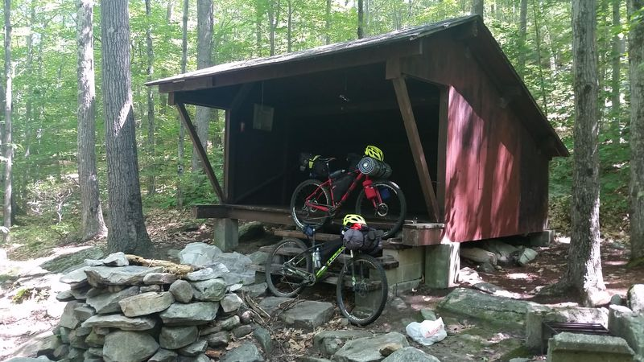

I had just begun to dabble in the weird world of mountain biking when I agreed to a 40-mile roundtrip overnight on a packed mountain bike. Up until May of this year, I was growing as a road cyclist and had no interest in the seeming perversity that leads people to ride bikes off-road. For me, road biking plays into my love of planning and predictability. The road itself interacts predictably with the tires of the bike as they roll smoothly over it. As a road biker, I control my speed, distance, and elevation climbed. Mountain biking, in contrast, is not predictable and my early attempts at the "sport" involved quite a bit of walking down hills that had unstable ground or too many obstacles for my tires. Anything with too steep of an incline had me off the bike and hiking. I had begun to do more dirt and gravel road riding and had thus begun to gain some confidence, but by the time I would embark on a two-day 40-mile trip, my longest mountain biking experience was approximately 3 miles long.
In July, my new friend, the one who dragged me into this mountain biking depravity, asked me if I would like to accompany him on an overnight bikepacking trip. In addition to my inexperience in mountain biking, I had only been camping twice: the first time I froze and the second time I was kept awake by music and drugged-out festival goers. For some reason, I responded that there was nothing that I more wanted to do that weekend. Although this friend is a new one, he rightly questioned what amount of sarcasm I intended in that statement. In this case, however, there was surprisingly none.
Once I had committed to this insanity, it was time to jump 100% into what was definitely the most fun part of the trip (kidding/not kidding): planning. Or, more precisely, collaborating in real time to create a Google spreadsheet of all the gear needed and where it would be placed on the bikes. Most of the gear was to be provided for me for this first trip, but I chimed in on my clothes and food preferences.
Saturday morning arrived and I showed up in Amherst with some anxiety about my ability to ride a mountain bike for 21 miles that day. It was too late to worry too much because after a 2 mile jaunt down the road we were on our first trail at Amethyst Brook. It wasn't too long before I was walking my bike up a rocky and rooty climb. Nevertheless, it was somewhere in the midst of this climb that I decided that I could do this trip. I was already hot and sweaty, and was not doing a good job of keeping up with my more experienced, but graciously patient, ride leader. When I would stop to walk, I had trouble figuring out how to start again on an incline and thus would often walk more than I needed to even once the grade or ground got easier. It was at this point that I began to get discouraged. I was thinking, "You aren't supposed to be walking. You should have made it up that hill. Why are you so scared to go over those rocks? What do you think you're doing out here, you can't mountain bike!" I don't actually remember my actual thoughts, but it is easy enough to conjure up the usual suspects. The thing is, by the end there I had said the magic word. My mind began to shift and a new kind of thought entered my head: "Who says what I should be doing? What does 'supposed to' even mean?" And then, at the word "can't", "Well, why the hell can't I?" This has become a bit of refrain for me. Whenever I hear myself saying "I can't" do something, I've begun to respond to myself with that same rejoinder, "Why the hell can't I?" It was at that moment that I accepted that I was walking up a hill while on a bike ride. I accepted that I was going to be slower than my guide. From then on I decided that this adventure would be mine. There were times I hiked my bike and there were times I impressed myself. There were obstacles that I decided I would have to conquer next time and there were roots or rocks that I just rolled right over. I walked down plenty of sketchy (to me) descents, but I had a great day.
It was at the top of a gravel road climb that had about cooked my legs that we began to feel rain. There was shelter and a lunch spot down the road about a mile away at the Leverett Co-op. We took off. We bombed down the gravel descent as the rain became heavier. For a few moments the rain stung a bit more like hail. Thankfully lunch was in sight and we reached shelter before the rain came down even harder. We waited out the rest of the passing storm while refreshing ourselves with hummus, crackers, and other assorted snacks. After lunch we were on trail again soon enough, wending and winding our way through a maze of hiking trails. We made it through the maze without much ado and finished the rest of the trail ride to Wendell State Forest, where we planned to stay the night. We arrived at the shelter in the afternoon and relaxed for the rest of the evening. Dinner was the delicious combination of jerky in ramen, which tasted like high cuisine after our exertion.
Sleep eluded me for much of the night as I tried to sleep in a three-sided shelter, otherwise covered only by a sleeping bag. The consistent sound of a stream streaming nearby was peppered by the inconsistent, but persistent, sound of acorns dropping from trees. At the time the going theory was that a group of militant squirrels were throwing these acorns down in a rudimentary form of water torture in an attempt to force us to leave their forest. In the morning I wasn't well rested, but the previous day had taught me that bikepacking seems to be mostly about persistence, a good attitude, and just enough gas in the legs to keep moving. After some tea and oatmeal, I had enough of the latter, and the knowledge that our return trended mostly downhill helped with the first two requirements.
The first third of the return trip was an easy return to the lunch spot of the previous day, where we proceeded to have the truly decadent lunch of crackers and summer sausage. After lunch we followed and then passed several aging but intrepid road cyclists who had finally given in to walking down a gravel descent. My good spirits caused me to agree to return via trails rather than an easier return by road, so we picked up the quite hilly/rocky Robert Frost trail in Leverett. After hiking my bike interspersed with riding for a few minutes at a time, I was happy when the trail eased up as we drew nearer to Puffers Pond. As we neared the finish line, my biggest complaints were pain in my wrists from flat handlebars and the fact that mosquitos always seemed to congregate in front of my sunglasses as I attempted to navigate my way somewhat gracefully up or down some technical section. All in all, it was an incredibly nice way to spend a weekend.
The next weekend we repeated the trip to Wendell but varied the route to try some new sections. These two trips seem to have awakened some realization in me that a day spent in the woods on a bike provides a certain feeling that is difficult to find elsewhere. The experience is whatever you would like it to be. Enjoy yourself, push yourself, experience something new. Pedal, pedal, pedal.
Mountain biking is not predictable. Unlike the road, you have to constantly be ready to adapt, change course, move forward, and plan ahead. With some persistence, a good attitude, and some snacks ... you'll go far.
"No matter where you go, there you are." So bring snacks.